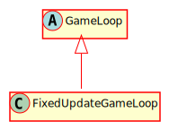

Hierarchy-Diagram
{kind=link}
Legend
 class
class
 abstract class
abstract class
 interface
interface
 public property
public property
 protected property
protected property
 private property
private property
 public method
public method
 protected method
protected method
 private method
private method
Hierarchy
- GameLoop
- FixedUpdateGameLoop
Index
Constructors
Properties
Accessors
Methods
Constructors
constructor
Returns FixedUpdateGameLoop
Properties
Protected _do
The function to call when a render occurs
Protected _do
The function to call when an update occurs
Private fps
The actual fps of the game.
Private fps
The time between fps measurement updates.
Private frame
The current frame of the game.
Private frame
The amount of time we are yet to simulate.
Private frames
The number of frames since the last fps update was done.
Private last
The time of the last fps update.
Private last
The time when the last frame was drawn.
Private max
The max allowed update fps.
Private min
The minimum time we want to wait between game frames.
Private num
The number of update steps this iteration of the game loop.
Private paused
The status of whether or not the game loop is paused
Private running
The status of whether or not the game loop is currently running.
Private started
The status of whether or not the game loop has started.
Private update
The timestep for each update. This is the deltaT passed to update calls.
Accessors
do
Parameters
render: Function
Returns void
do
Parameters
update: Function
Returns void
Methods
Protected do
The first game frame - initializes the first frame time and begins the render
Parameters
timestamp: number
The current time in ms
Returns void
Protected do
The main loop of the game. Updates until the current time is reached. Renders once
Parameters
timestamp: number
The current time in ms
Returns void
Protected finish
Wraps up the frame and handles the panic state if there is one
Parameters
panic: boolean
Whether or not the loop panicked
Returns void
getFPS
Retrieves the current FPS of the game
Returns number
pause
Pauses the game loop, usually for an error condition.
Returns void
reset
This function is called when the game loop panics, i.e. it tries to process too much time in an entire frame. This will reset the amount of time back to zero.
Returns number
The amount of time we are discarding from processing.
resume
Resumes the game loop.
Returns void
set
Sets the maximum rendering framerate
Parameters
maxFPS: number
The max framerate
Returns void
set
Changes the maximum allowed physics framerate of the game
Parameters
initMax: number
The max framerate
Returns void
start
Starts up the game loop and calls the first requestAnimationFrame
Returns void
Protected start
Handles any processing that needs to be done at the start of the frame
Parameters
timestamp: number
The time of the frame in ms
Returns void
Protected updateFPS
Updates the frame count and sum of time for the framerate of the game
Parameters
timestamp: number
Returns void
A game loop with a fixed update time and a variable render time. Every frame, the game updates until all time since the last frame has been processed. If too much time has passed, such as if the last update was too slow, or if the browser was put into the background, the loop will panic and discard time. A render happens at the end of every frame. This happens as fast as possible unless specified. A loop of this type allows for deterministic behavior - No matter what the frame rate is, the update should behave the same, as it is occuring in a fixed interval.